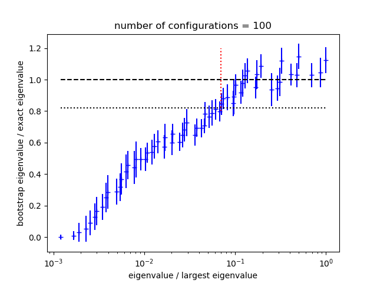

corrfitter - Least-Squares Fit to Correlators¶
Introduction¶
This module contains tools that facilitate least-squares fits, as functions
of time t, of simulation (or other statistical) data for 2-point and
3-point correlators of the form:
Gab(t) = <b(t) a(0)>
Gavb(t,T) = <b(T) V(t) a(0)>
where T > t > 0. Each correlator is modeled using corrfitter.Corr2 for 2-point
correlators, or corrfitter.Corr3 for 3-point correlators in terms of amplitudes for
each source a, sink b, and vertex V, and the energies
associated with each intermediate state. The amplitudes and energies are
adjusted in the least-squares fit to reproduce the data; they are defined
in a shared prior (typically a dictionary).
An object of type corrfitter.CorrFitter describes a collection of correlators and is
used to fit multiple models to data simultaneously. Fitting multiple
correlators simultaneously is important if there are statistical
correlations between the correlators. Any number of correlators may be
described and fit by a single corrfitter.CorrFitter object.
We now review the basic features of corrfitter. These features are also
illustrated for real applications in a series of annotated
examples following this section. Impatient readers may wish to jump
directly to these examples.
About Printing: The examples in this tutorial use the print function
as it is used in Python 3. Drop the outermost parenthesis in each print
statement if using Python 2; or add
from __future__ import print_function
at the start of your file.
Basic Fits¶
To illustrate, consider data for two 2-point correlators: Gaa with the
same source and sink (a), and Gab which has source a and
(different) sink b. The data are contained in a dictionary data,
where data['Gaa'] and data['Gab'] are one-dimensional arrays
containing values for Gaa(t) and Gab(t), respectively, with
t=0,1,2...63. Each array element in data['Gaa'] and data['Gab']
is a Gaussian random variable of type gvar.GVar, and specifies the mean and
standard deviation for the corresponding data point:
>>> print(data['Gaa'])
[0.1597910(41) 0.0542088(31) ... ]
>>> print(data['Gab'])
[0.156145(18) 0.102335(15) ... ]
gvar.GVars also capture statistical correlations between different
pieces of data, if they exist.
We want to fit this data to the following formulas:
Gaa(t,N) = sum_i=0..N-1 a[i]**2 * exp(-E[i]*t)
Gab(t,N) = sum_i=0..N-1 a[i]*b[i] * exp(-E[i]*t)
Our goal is to find values for the amplitudes, a[i] and b[i], and the
energies, E[i], so that these formulas reproduce the average values for
Gaa(t,N) and Gab(t,N) that come from the data, to within the data’s
statistical errors. We use the same a[i]s and E[i]s in both
formulas. The fit parameters used by the fitter are the a[i]s and
b[i]s, as well as the differences dE[i]=E[i]-E[i-1] for i>0 and
dE[0]=E[0]. The energy differences are usually positive by construction
(see below) and are easily converted back to energies using:
E[i] = sum_j=0..i dE[j]
A typical code has the following structure:
import corrfitter as cf
def main():
data = make_data('mcfile') # user-supplied routine
models = make_models() # user-supplied routine
N = 4 # number of terms in fit functions
prior = make_prior(N) # user-supplied routine
fitter = cf.CorrFitter(models=models)
fit = fitter.lsqfit(data=data, prior=prior) # do the fit
print(fit)
print_results(fit, prior, data) # user-supplied routine
...
if __name__ == '__main__':
main()
We discuss each user-supplied routine in turn.
a) make_data¶
make_data('mcfile') creates the dictionary containing the data that is to
be fit. Typically such data comes from a Monte Carlo simulation. Exactly
how the data are assembled depends upon how Monte Carlo results are stored.
Imagine, for example, that
the simulation creates a file called 'mcfile' with layout
# first correlator: each line has Gaa(t) for t=0,1,2...63
Gaa 0.159774739530e+00 0.541793561501e-01 ...
Gaa 0.159751906801e+00 0.542054488624e-01 ...
Gaa ...
.
.
.
# second correlator: each line has Gab(t) for t=0,1,2...63
Gab 0.155764170032e+00 0.102268808986e+00 ...
Gab 0.156248435021e+00 0.102341455176e+00 ...
Gab ...
.
.
.
where each line is one Monte Carlo measurement for one or the other
correlator, as indicated by the tags at the start of the line. (Lines for
Gab may be interspersed with lines for Gaa since every line has a
tag.) A data file in this format can be analyzed using:
import gvar as gv
import corrfitter as cf
def make_data(filename):
dset = cf.read_dataset(filename)
return gv.dataset.avg_data(dset)
This reads the data from the file into a dataset, which is a dictionary whose values are two-dimenional arrays where the first index labels the Monte Carlo sample, and the second index labels time: for example,
>>> print(dset['Gaa'])
[ [0.159774739530e+00 0.541793561501e-01 ... ],
[0.159751906801e+00 0.542054488624e-01 ... ],
...]
Function gvar.dataset.avg_data() then
averages over the Monte Carlo samples. Thus
data = make_data('mcfile') creates a dictionary where
data['Gaa'] is a one-dimensional array of gvar.GVars, indexed by time,
obtained by averaging over the
Gaa data in the 'mcfile', and data['Gab'] is a similar array
for the Gab correlator. The correlator values for different
ts are typically correlated with each other.
Other data formats are readily adapted to this purpose. For example, the same Monte Carlo data might be stored in an hdf5 file:
import h5py
import gvar as gv
def make_data(filename):
h5file = h5py.File(filename, 'r')
dset = dict(
Gaa=h5file['/run5/Gaa'], Gab=hfile['/run5/Gab']
)
return gv.dataset.avg_data(dset)
Here we assume h5file['/run5/Gaa'] and hfile['/run5/Gab']
are hdf5 datasets that
have been configured, again, as two-dimensional numpy arrays, where the
first index is the Monte Carlo sample (configuration) index, and the second
index is time.
Function corrfitter.read_dataset() can read hdf5 files, so this
last example could also be handled by
def make_data(filename):
dset = cf.read_dataset(filename, h5group='/run5')
return gv.dataset.avg_data(dset)
provided filename ends in '.h5'. This
reads in all hdf5 datasets in group /run5.
b) make_models¶
make_models() identifies which correlators in the fit data are to be fit,
and specifies theoretical models (that is, fit functions) for these
correlators:
import corrfitter as cf
def make_models():
tdata = range(64)
tfit = tdata[2:]
models = [
cf.Corr2(datatag='Gaa', tdata=tdata, tfit=tfit, a='a', b='a', dE='dE'),
cf.Corr2(datatag='Gab', tdata=tdata, tfit=tfit, a='a', b='b', dE='dE'),
]
return models
For each correlator, we specify: the key used in the input data dictionary
data for that correlator (datatag); the t values,
tdata=[0,1,2...63], associated with each element of the fit data
for the correlator; the subset
of tdata values, tfit=[2,3,4...63], to be used in the fit;
and fit-parameter labels for the source (a) and
sink (b) amplitudes, and for the intermediate energy-differences
(dE). Fit-parameter labels identify the parts of the prior,
discussed below, corresponding to the actual fit parameters (the labels are
dictionary keys). Here the two models, for Gaa and Gab, are
identical except for the data tags and the sinks. make_models() returns
a list of models; the only parts of the input fit data that are fit are
those for which a model is specified in make_models().
Note that if there is data for Gba(t,N) in addition to Gab(t,N), and
Gba = Gab, then the (weighted) average of the two data sets will be
fit if models[1] is replace by:
cf.Corr2(
datatag='Gab', tmin=1, tmax=63, a='a', b='b', dE='dE',
otherdata='Gba',
)
Alternatively one could add a third Corr2 to models for Gba,
but it is more efficient to combine it with Gab, before the fit,
if they are
equivalent.
The arrays tdata and tfit provide more flexibility than is often
needed. Here, because there is data for all t values starting with 0,
we could have defined the correlator objects more simply, in terms
of the minimum and maximum t values used in the fit: for example,
cf.Corr2(datatag='Gaa', tmin=2, tmax=63, a='a', b='a', dE='dE')
corrfitter.Corr2 creates the obvious choices for
tdata and tfit from the information given.
c) make_prior¶
This routine defines the fit parameters that correspond to each fit-parameter
label used in make_models() above. It also assigns a priori values to
each parameter, expressed in terms of Gaussian random variables (gvar.GVars),
with a mean and standard deviation. The prior is built using a Python
dictionary (we use gvar.BufferDict but others would work):
import gvar as gv
def make_prior(N):
prior = gvar.BufferDict()
prior['a'] = gv.gvar(N * ['0.1(5)'])
prior['b'] = gv.gvar(N * ['1(5)'])
prior['dE'] = gv.gvar(N * ['0.25(25)'])
return prior
make_prior(N) associates arrays of N Gaussian random variables
(gvar.GVars) with each fit-parameter label, enough for N terms in the fit
function. These are the a priori values for the fit parameters, and they
can be retrieved using the label: setting prior=make_prior(N), for
example, implies that prior['a'][i], prior['b'][i] and
prior['dE'][i] are the a priori values for a[i], b[i] and
dE[i] in the fit functions (see above). The a priori value for each
a[i] here is set to 0.1±0.5, while that for each b[i] is
1±5:
>>> print(prior['a'])
[0.10(50) 0.10(50) 0.10(50) 0.10(50)]
>>> print(prior['b'])
[1.0(5.0) 1.0(5.0) 1.0(5.0) 1.0(5.0)]
Similarly the a priori value for each energy difference is 0.25±0.25.
(See the lsqfit documentation for further information on priors.)
d) print_results¶
The actual fit is done by fit=fitter.lsqfit(...), and print(fit)
right afterwards prints a summary of the fit results.
Further results are reported by print_results(fit, prior, data): for
example,
def print_results(fit, prior, data):
print(fit)
a = fit.p['a'] # array of a[i]s
b = fit.p['b'] # array of b[i]s
dE = fit.p['dE'] # array of dE[i]s
E = np.cumsum(dE) # array of E[i]s
print('Best fit values:)
print(' a[0] =',a[0])
print(' b[0] =',b[0])
print(' E[0] =',E[0])
print('b[0]/a[0] =',b[0]/a[0])
outputs = {'E0':E[0], 'a0':a[0], 'b0':b[0], 'b0/a0':b[0]/a[0]}
inputs = {'a'=prior['a'], 'b'=prior['b'], 'dE'=prior['dE'],
'data'=[data[k] for k in data])
print(fit.fmt_errorbudget(outputs, inputs))
The best-fit values from the fit are contained in fit.p and are accessed
using the labels defined in the prior and the corrfitter.Corr2 models. Variables like
a[0] and E[0] are gvar.GVar objects that contain means and standard
deviations, as well as information about any correlations that might exist
between different variables (which is relevant for computing functions of the
parameters, like b[0]/a[0] in this example).
The last line of print_results(fit,prior,data) prints an error budget for
each of the best-fit results for a[0], b[0], E[0] and
b[0]/a[0], which are identified in the print output by the labels
'a0', 'b0', 'E0' and 'b0/a0', respectively. The error for any
fit result comes from uncertainties in the inputs — in particular, from the
fit data and the priors. The error budget breaks the total error for a
result down into the components coming from each source. Here the sources are
the a priori errors in the priors for the 'a' amplitudes, the 'b'
amplitudes, and the 'dE' energy differences, as well as the errors in
the fit data data. These sources are labeled in the print output by
'a', 'b', 'dE', and 'data', respectively. (See the
gvar/lsqfit tutorial for further details on partial standard
deviations and gvar.fmt_errorbudget().)
Plots of the fit data divided by the fit function, for each correlator, are
displayed by calling fit.show_plots() provided the matplotlib
module is present.
Faster Fits¶
Good fits often require fit functions with several exponentials and many parameters. Such fits can be costly. One strategy that can speed things up is to use fits with fewer terms to generate estimates for the most important parameters. These estimates are then used as starting values for the full fit. The smaller fit is usually faster, because it has fewer parameters, but the fit is not adequate (because there are too few parameters). Fitting the full fit function is usually faster given reasonable starting estimates, from the smaller fit, for the most important parameters. Continuing with the example from the previous section, the code
data = make_data('mcfile')
fitter = cf.CorrFitter(models=make_models())
p0 = None
for N in [1,2,3,4,5,6,7,8]:
prior = make_prior(N)
fit = fitter.lsqfit(data=data, prior=prior, p0=p0)
print_results(fit, prior, data)
p0 = fit.pmean
does fits using fit functions with N=1...8 terms. Parameter mean-values
fit.pmean from the fit with N exponentials are used as starting values
p0 for the fit with N+1 exponentials, hopefully reducing the time
required to find the best fit for N+1.
Faster Fits — Postive Parameters¶
Priors used in corrfitter.CorrFitter assign an a priori Gaussian/normal distribution
to each parameter. It is possible instead to assign a log-normal distribution,
which forces the corresponding parameter to be positive. Consider, for
example, energy parameters labeled by 'dE' in the definition of a model
(e.g., Corr2(dE='dE',...)). To assign log-normal distributions to these
parameters, include their logarithms in the prior and label the logarithms
with 'log(dE)': for
example, in make_prior(N) use
prior['log(dE)'] = gv.log(gv.gvar(N * ['0.25(25)']))
instead of prior['dE'] = gv.gvar(N * ['0.25(25)']). The
fitter then uses the logarithms as the fit parameters. The original 'dE'
parameters are recovered (automatically) inside the fit function from
exponentials of the 'log(dE)' fit parameters.
Using log-normal distributions where possible can significantly improve the
stability of a fit. This is because otherwise the fit function typically has
many symmetries that lead to large numbers of equivalent but different best
fits. For example, the fit functions Gaa(t,N) and Gab(t,N) above are
unchanged by exchanging a[i], b[i] and E[i] with a[j],
b[j] and E[j] for any i and j. We can remove this degeneracy
by using a log-normal distribution for the dE[i]s since this guarantees
that all dE[i]s are positive, and therefore that E[0],E[1],E[2]...
are ordered (in decreasing order of importance to the fit at large t).
Another symmetry of Gaa and Gab, which leaves both fit functions
unchanged, is replacing a[i],b[i] by -a[i],-b[i]. Yet another is to
add a new term to the fit functions with a[k],b[k],dE[k] where a[k]=0
and the other two have arbitrary values. Both of these symmetries can be
removed by using a log-normal distribution for the a[i] priors, thereby
forcing all a[i]>0.
The log-normal distributions for the a[i] and dE[i] are introduced
into the code example above by changing the corresponding labels in
make_prior(N), and taking logarithms of the corresponding prior values:
import gvar as gv
import corrfitter as cf
def make_models(): # same as before
models = [
cf.Corr2(datatag='Gaa', tmin=2, tmax=63, a='a', b='a', dE='dE'),
cf.Corr2(datatag='Gab', tmin=2, tmax=63, a='a', b='b', dE='dE'),
]
return models
def make_prior(N):
prior = gv.BufferDict()
prior['log(a)'] = gv.log(gv.gvar(N * ['0.1(5)']))
prior['b'] = gv.gvar(N * ['1(5)'])
prior['log(dE)'] = gv.log(gv.gvar(N * ['0.25(25)']))
return prior
This replaces the original fit parameters, a[i] and dE[i], by new fit
parameters, log(a)[i] and log(dE)[i]. The a priori distributions for
the logarithms are Gaussian/normal, with priors of log(0.1±0.5) and
log(0.25±0.25) for the log(a)s and log(dE)s respectively.
Note that the labels are unchanged here in make_models(). It is
unnecessary to change labels in the models; corrfitter.CorrFitter will automatically
connect the modified terms in the prior with the appropriate terms in the
models. This allows one to switch back and forth between log-normal and normal
distributions without changing the models (or any other code) — only the
names in the prior need be changed. corrfitter.CorrFitter also supports “sqrt-normal”
distributions, and other distributions, as discussed in the lsqfit
documentation.
Finally note that another option for stabilizings fits involving many
sources and sinks is to generate priors for the
fit amplitudes and energies using corrfitter.EigenBasis.
Faster Fits — Marginalization¶
Often we care only about parameters in the leading term of the fit function, or just a few of the leading terms. The non-leading terms are needed for a good fit, but we are uninterested in the values of their parameters. In such cases the non-leading terms can be absorbed into the fit data, leaving behind only the leading terms to be fit (to the modified fit data) — non-leading parameters are, in effect, integrated out of the analysis, or marginalized. The errors in the modified data are adjusted to account for uncertainties in the marginalized terms, as specified by their priors. The resulting fit function has many fewer parameters, and so the fit can be much faster.
Continuing with the example in Faster Fits, imagine that Nmax=8
terms are needed to get a good fit, but we only care about parameter values
for the first couple of terms. The code from that section can be modified to
fit only the leading N terms where N<Nmax, while incorporating
(marginalizing) the remaining, non-leading terms as corrections to the data:
Nmax = 8
data = make_data('mcfile')
models = make_models()
fitter = cf.CorrFitter(models=make_models())
prior = make_prior(Nmax) # build priors for Nmax terms
p0 = None
for N in [1,2,3]: # fit N terms
fit = fitter.lsqfit(data=data, prior=prior, p0=p0, nterm=N)
print_results(fit, prior, data)
p0 = fit.pmean
Here the nterm parameter in fitter.lsqfit specifies how many terms are
used in the fit functions. The prior specifies Nmax terms in all, but only
parameters in nterm=N terms are varied in the fit. The remaining terms
specified by the prior are automatically incorporated into the fit data by
corrfitter.CorrFitter.
Remarkably this method is usually as accurate with N=1 or 2 as a full
Nmax-term fit with the original fit data; but it is much faster. If this
is not the case, check for singular priors, where the mean is much smaller
than the standard deviation. These can lead to singularities in the covariance
matrix for the corrected fit data. Such priors are easily fixed: for example,
use gvar.gvar('0.1(1.0)') rather than gvar.gvar('0(1)').
In some situations an SVD cut (see below) can also
help.
Faster Fits — Chained Fits¶
Large complicated fits, where lots of models and data are fit simultaneously,
can take a very long time. This is especially true if there are strong
correlations in the data. Such correlations can also cause problems from
numerical roundoff errors when the inverse of the data’s covariance matrix is
computed for the  function, requiring large SVD cuts which can
degrade precision (see below). An alternative approach is to use chained
fits. In a chained fit, each model is fit by itself in sequence, but with the
best-fit parameters from each fit serving as priors for fit parameters in the
next fit. All parameters from one fit become fit parameters in the next,
including those parameters that are not explicitly needed by the next fit
(since they may be correlated with the input data for the next fit or with its
priors). Statistical correlations between data/priors from different models
are preserved throughout (approximately).
function, requiring large SVD cuts which can
degrade precision (see below). An alternative approach is to use chained
fits. In a chained fit, each model is fit by itself in sequence, but with the
best-fit parameters from each fit serving as priors for fit parameters in the
next fit. All parameters from one fit become fit parameters in the next,
including those parameters that are not explicitly needed by the next fit
(since they may be correlated with the input data for the next fit or with its
priors). Statistical correlations between data/priors from different models
are preserved throughout (approximately).
The results from a chained fit are identical to a standard simultaneous fit in the limit of large statistics (that is, in the Gaussian limit), but a chained fit usually involves fitting only a single correlator at a time. Single-correlator fits are typically much faster than simultaneous multi-correlator fits, and roundoff errors (and therefore SVD cuts) are much less of a problem.
Converting to chained fits is trivial: simply replace fit = fitter.lsqfit(...)
by fit = fitter.chained_lsqfit(...). The output from this function
comes from the last fit in the chain, whose fit results represent the
cummulative results of the entire chain of fits.
Results from the different links in
the chain — that is, from the fits for individual models — are
displayed using print(fit.formatall()).
There are various ways of chaining fits. For example, setting
models = [m1, m2, (m3a, m3b), m4]
causes models m1, m2 and m4 to be fit separately, but fits models
m3a and m3b together in a single simultaneous fit:
m1 -> m2 -> (simultaneous fit of m3a, m3b) -> m4
Simultaneous fits make sense when there is lots of overlap between the parameters for the different models.
Another option is
models = [m1, m2, [m3a,m3b], m4]
in fitter.chained_lsqfit which causes
the following chain of fits:
m1 -> m2 -> (parallel fit of m3a, m3b) -> m4
Here the output from m1 is used in the prior for fit m2, and the
output from m2 is used as the prior for a parallel fit of m3a
and m3b together — that is, m3a and m3b are not chained,
but rather are fit in parallel with each using a prior from fit m2. The
result of the parallel fit of [m3a,m3b] is used as the prior for m4.
Parallel fits make sense when there is little overlap between the parameters
used by the different fits.
Faster Fits — Faster Fitters¶
When fits take many iterations to converge (or converge to an obviously wrong
result), it is worthwhile trying a
different fitter. The lsqfit module, which is used by
corrfitter for fitting, offers a variety of alternative
fitting algorithms that can sometimes be much faster (2 or 3 times
faster). These are deployed by adding extra directives for lsqfit
when constructing the fitter or when doing the fit: for example,
import corrfitter as cf
fitter = cf.CorrFitter(
models=make_models(),
fitter='gsl_multifit', alg='subspace2D', solver='cholesky'
)
uses the subspace2D algorithm for subsequent fits with fitter. It
is also possible to reset the default algorithms for all fits:
import lsqfit
lsqfit.nonlinear_fit.set(
fitter='gsl_multifit', alg='subspace2D', solver='cholesky'
)
The documentation for lsqfit describes many more options.
Faster Fits — Processed Datasets¶
When fitting very large data sets, it is usually worthwhile to pare the data down to the smallest subset that is needed for the fit. Ideally this is done before the Monte Carlo data are averaged, to keep the size of the covariance matrix down. One way to do this is to process the Monte Carlo data with the models, just before averaging it, by using
import gvar as gv
import corrfitter as cf
def make_pdata(filename, models):
dset = cf.read_dataset(filename)
return cf.process_dataset(dset, models)
in place of make_data(filename). Here models is the list
of models used by the fitter (fitter.models). Function make_pdata
returns processed data which is passed to fitter.lsqfit using
the pdata keyword:
import corrfitter as cf
def main():
N = 4
models = make_models()
pdata = make_pdata('mcfile', models)
prior = make_prior(N)
fitter = cf.CorrFitter(models=models)
fit = fitter.lsqfit(pdata=pdata, prior=prior)
print(fit)
print_results(fit, prior, pdata)
...
if __name__ == '__main__':
main()
Processed data can only be used with the models that created it, so parameters in those models should not be changed after the data is processed.
Accurate Fits — SVD Cuts¶
A key feature of corrfitter is its ability to fit multiple correlators
simultaneously, taking account of the statistical correlations between
correlators at different times and between
different correlators. Information about the correlations typically comes from
Monte Carlo samples of the correlators. Problems arise, however, when the
number  of samples is not much larger than
the number
of samples is not much larger than
the number  of data points being fit. Specifically the smallest
eigenvalues of the correlation matrix can be substantially underestimated if
is not sufficiently large (10 or 100 times larger than ).
Indeed there must be
of data points being fit. Specifically the smallest
eigenvalues of the correlation matrix can be substantially underestimated if
is not sufficiently large (10 or 100 times larger than ).
Indeed there must be  zero eigenvalues
when
zero eigenvalues
when  . The underestimated
(or zero) eigenvalues lead to incorrect and large (or infinite) contributions
to the fit’s function, invalidating the fit results.
. The underestimated
(or zero) eigenvalues lead to incorrect and large (or infinite) contributions
to the fit’s function, invalidating the fit results.
These problems tend show up as an unexpectedly large s,
for example, in fits where the per degree of freedom remains
substantially larger than one no matter how many fit terms are
employed. Such situations are usually improved by introducing an
SVD cut:
fit = fitter.lsqfit(data=data, prior=prior, p0=p0, svdcut=1e-2)
This replaces the smallest eigenvalues of the correlation matrix as needed
so that no eigenvalue is smaller than svdcut times the largest eigenvalue.
Introducing an SVD cut increases the effective errors and so is a
conservative move.
The method gvar.dataset.svd_diagnoisis() in module gvar is
useful for assessing whether an SVD cut is needed, and for setting
its value. One way to use it is in the make_pdata
routine when creating processed data (see Faster Fits — Processed Datasets):
import gvar as gv
import corrfitter as cf
GENERATE_SVD = True
def make_pdata(filename, models):
dset = cf.read_dataset(filename)
pdata = cf.process_dataset(dset, models)
if GENERATE_SVD:
s = gv.dataset.svd_diagnosis(dset, models)
print('suggested svdcut =', s.svdcut)
s.plot_ratio(show=True)
svdcut = s.svdcut
else:
svdcut = 0.1
return gv.svd(pdata, svdcut=svdcut)
Here gv.dataset.svd_diagnosis(dset, models) uses a bootstrap
simulation (see Bootstrap Analyses) to test the reliability
of the eigenvalues determined from the
Monte Carlo data in dset. It places the SVD cut at the point
where the bootstrapped eigenvalues fall well below the actual values.
A plot showing the ratio of bootstrapped to actual eigenvalues is
displayed by s.plot_ratio(show=True). The following are
sample plots from two
otherwise identical simulations of 3 correlators (66 data points in all),
one with 100 configurations and the
other with 10,000 configurations:
|  | 
|
With only 100 configurations, three quarters of the eigenvalues are too
small in the bootstrap simulation, and therefore also
likely too small for the real data. Simulated and actual eigenvalues come into
agreement around 0.1 (red dashed line),
which is the suggested value for svdcut. With 10,000 configurations,
all of the eigenvalues are robust and no SVD cut is needed. Both data
sets produce good fits (using the appropriate svdcut for each). The
fits agree with each other, with uncertainties from the high-statistics
case that are 10 times smaller, as expected.
In make_pdata() above, the SVD cut is applied directly to the
data (gv.svd(pdata, svdcut=svdcut)) before it is fit,
and so need not be supplied to the fitter. This is convenient when
using processed data because both the Monte Carlo data (dset) and
the corrfitter models are available.
Another option is to do the SVD diagnosis just before fitting and pass the
value of svdcut to corrfitter.
Variations¶
A 2-point correlator is turned into a periodic function of t by
specifying the period through parameter tp. Doing so causes the
replacement (for tp>0)
exp(-E[i]*t) -> exp(-E[i]*t) + exp(-E[i]*(tp-t))
in the fit function. If tp is negative, the function is replaced by
an anti-periodic function with period abs(tp) and (for tp<0):
exp(-E[i]*t) -> exp(-E[i]*t) - exp(-E[i]*(abs(tp)-t))
Also (or alternatively) oscillating terms can be added to the fit by
modifying parameter s and by specifying sources, sinks and energies for
the oscillating pieces. For example, one might want to replace the sum of
exponentials with two sums
sum_i a[i]**2 * exp(-E[i]*t) - sum_i ao[i]**2 (-1)**t * exp(-Eo[i]*t)
in a (nonperiodic) fit function. Then an appropriate model would be, for example,
Corr2(
datatag='Gaa', tmin=2, tmax=63,
a=('a','ao'), b=('a','ao'), dE=('dE','dEo'), s=(1,-1)
)
where ao and dEo refer to additional fit parameters describing
the oscillating component. In general parameters for amplitudes and
energies can be tuples with two components: the first describing normal
states, and the second describing oscillating states. To omit one or the
other, put None in place of a label. Parameter s[0] is an overall
factor multiplying the non-oscillating terms, and s[1] is the
corresponding factor for the oscillating terms.
Very Fast (But Limited) Fits¶
At large t, two-point correlators are dominated by the term with the
smallest E, and often it is only the parameters in that leading term that
are needed. In such cases there is a very fast analysis that is often almost
as accurate as a full fit. Assuming a non-periodic correlator, for example,
we want to calculate energy E[0] and amplitude A[0] where:
G(t) = sum_i=0,N-1 A[i] * exp(-E[i]*t)
This is done using the following code
from corrfitter import fastfit
# Gdata = array containing G(t) for t=0,1,2...
fit = fastfit(Gdata, ampl='0(1)', dE='0.5(5)', tmin=3)
print('E[0] =', fit.E) # E[0]
print('A[0] =', fit.ampl) # A[0]
print('chi2/dof =', fit.E.chi2/fit.dof) # good fit if of order 1 or less
print('Q =', fit.E.Q) # good fit if Q > 0.05-0.1
where G is an array containing a two-point correlator, ampl is
a prior for the amplitudes A[i], dE is a prior for energy
differences E[i]-E[i-1], and tmin is the minimum time used in
the analysis.
fastfit is fast because it does not attempt to determine any
parameters in G(t) other than E[0] and A[0]. It does this
by using the priors for the amplitudes and energy differences
to remove (marginalize) all terms from the correlator other than the
E[0] term: so the data Gdata(t) for the correlator are replaced by
Gdata(t) - sum_i=1..N-1 A[i] * exp(-E[i]*t)
where A[i] and E[i] for i>0 are replaced by priors given by
ampl and (i+1) * dE, respectively. The modified correlator is then fit
by a single term, A[0] * exp(-E[0]*t), which means that a fit is not
actually necessary since the functional form is so simple. fastfit
averages estimates for E[0] and A[0] from all ts larger than
tmin. It is important to verify that these estimates agree with each
other, by checking the of the average. Try increasing tmin if
the is too large; or introduce an SVD cut.
The energies from fastfit are closely related to standard effective
masses. The key difference is fastfit’s marginalization of terms
from excited states (i>0 above). This allows fastfit to use
information from much smaller ts than otherwise, increasing precision. It
also quantifies the uncertainty caused by the existence of excited states,
and gives a simple criterion for how small tmin can be (the ).
Results are typically as accurate as results obtained from a full
multi-exponential fit that uses the same priors for A[i] and E[i],
and the same tmin. fastfit can also be used for periodic and
anti-periodic correlators, as well as for correlators that contain terms that
oscillate in sign from one t to the next.
fastfit is a special
case of the more general marginalization strategy discussed in
Faster Fits, above.
3-Point Correlators¶
Correlators Gavb(t,T) = <b(T) V(t) a(0)> can also be included in fits
as functions of t. In the illustration above, for example, we might
consider additional Monte Carlo data describing a form factor with the
same intermediate states before and after V(t). Assuming the data is
tagged by aVbT15 and describes T=15, the corresponding entry in the
collection of models might then be:
Corr3(datatag='aVbT15', T=15, tdata=range(16), tfit=range(1, 16),
Vnn='Vnn', # parameters for V
a='a', dEa='dE', # parameters for a->V
b='b', dEb='dE', # parameters for V->b
)
This models the Monte Carlo data for the 3-point function using the following formula:
sum_i,j a[i] * exp(-Ea[i]*t) * Vnn[i,j] * b[j] * exp(-Eb[j]*t)
where the Vnn[i,j]s are new fit parameters related to a->V->b form
factors. Obviously multiple values of T can be studied by including
multiple corrfitter.Corr3 models, one for each value of T. Either or both of the
initial and final states can have oscillating components (include sa
and/or sb). If
there are oscillating states then additional Vs must be specified:
Vno connecting a normal state to an oscillating state, Von
connecting oscillating to normal states, and Voo connecting oscillating
to oscillating states.
Keywords tdata and tfit need not be specified when
there is data for every t=0,1...T: for example,
Corr3(
datatag='aVbT15', T=15, tmin=1,
Vnn='Vnn', a='a', dEa='dE', b='b', dEb='dE',
)
is equivalent to the definition above.
There are two cases that require special treatment. One is when
simultaneous fits are made to a->V->b and b->V->a. Then the
Vnn, Vno, etc. for b->V->a are the (matrix) transposes of
the the same matrices for a->V->b. In this case the models for the two
would look something like:
models = [
...
Corr3(
datatag='aVbT15', T=15, tmin=1,
Vnn='Vnn', Vno='Vno', Von='Von', Voo='Voo',
a=('a','ao'), dEa=('dE','dEo'), sa=(1,-1), # a->V
b=('b','bo'), dEb=('dE','dEo'), sb=(1,-1) # V->b
),
Corr3(
datatag='bVaT15', T=15, tmin=1, reverse=True,
Vnn='Vnn', Vno='Vno', Von='Von', Voo='Voo',
a=('a','ao'), dEa=('dE','dEo'), sa=(1,-1), # a->V
b=('b','bo'), dEb=('dE','dEo'), sb=(1,-1) # V->b
),
...
]
The second Corr3 is identical to the first except for the
datatag ('bVaT15'), and the keyword reverse=True, which
instructs the model to time-reverse its data, interchanging
t=0 with t=T, before fitting. Time-reversing in
effect turns b->V->a into a->V->b.
Another way to handle this last situation is to average the data
from b->V->a with that from a->V->b for a single fit. This
is done using one Corr3 but with the keyword reverseddata
to indicate the data to be time-reversed and then averaged with the
a->V->b data:
models = [
...
Corr3(
datatag='aVbT15', T=15, tmin=1, reverseddata='bVaT15',
Vnn='Vnn', Vno='Vno', Von='Von', Voo='Voo',
a=('a','ao'), dEa=('dE','dEo'), sa=(1,-1), # a->V
b=('b','bo'), dEb=('dE','dEo'), sb=(1,-1) # V->b
),
...
]
The second special case is for fits to a->V->a where the initial and final
particles are the same (with the same momentum). In that case, Vnn and
Voo are symmetric matrices, and Von is the transpose of Vno. The
model for such a case would look like, for example:
Corr3(
datatag='aVbT15', T=15, tmin=1,
Vnn='Vnn', Vno='Vno', Voo='Voo', symmetric_V=True,
a=('a','ao'), dEa=('dE', 'dEo'), sa=(1, -1), # a->V
b=('a','ao'), dEb=('dE', 'dEo'), sb=(1, -1) # V->a
)
Here only Vno is specified, since Von is its transpose.
Furthermore Vnn and Voo are (square) symmetric matrices when
symmetric_V==True and so only the upper part of each matrix is needed.
In this case Vnn and Voo are treated as one-dimensional arrays with
N(N+1)/2 elements corresponding to the upper parts of each matrix,
where N is the number of exponentials (that is, the number of
a[i]s).
Testing Fits with Simulated Data¶
Large fits are complicated and often involve nontrivial choices about
algorithms (e.g., chained fits versus regular fits), priors, and
SVD cuts — choices that affect the values and errors for the fit
parameters. In such situations it is often a good idea to test the
fit protocol that has been selected. This can be done by fitting simulated
data. Simulated data looks almost identical to the original fit
data but has means that have been adjusted to correspond to fluctuations
around a correlator with known (before the fit) parameter values: p=pexact.
The corrfitter.CorrFitter iterator simulated_pdata_iter creates any number of
different simulated data sets of this kind. Fitting any of these with
a particular fit protocol tests the reliability of that protocol since
the fit results should agree with pexact
to within the (simulated) fit’s errors. One or two fit simulations of this
sort are usually enough to establish the validity of a protocol. It is also
easy to compare the performance of different fit options by applying these in
fits of simulated data, again because we know the correct answers (pexact)
ahead of time.
Typically one obtains reasonable values for pexact from a fit to the
real data. Assuming these have been dumped into a file named "pexact_file"
(using, for example, fit.dump_pmean("pexact_file")), a testing script
might look something like:
import gvar as gv
import lsqfit
import corrfitter
def main():
dataset = gv.dataset.Dataset(...) # from original fit code
prior = make_prior(...)
fitter = corrfitter.CorrFitter(models = make_models(...))
n = 2 # number of simulations
pexact = lsqfit.nonlinear_fit.load_parameters("pexact_file")
for spdata in fitter.simulated_pdata_iter(n, dataset, pexact=pexact):
# sfit = fit to the simulated data sdata
sfit = fitter.lsqfit(pdata=spdata, p0=pexact, prior=prior...)
... check that sfit.p values agree with pexact to within sfit.psdev ...
Bootstrap Analyses¶
A bootstrap analysis gives more robust error estimates for fit parameters and functions of fit parameters than the conventional fit when errors are large, or fluctuations are non-Gaussian. A typical code looks something like:
import gvar as gv
import gvar.dataset as ds
from corrfitter import CorrFitter
# fit
dset = ds.Dataset('mcfile')
data = ds.avg_data(dset) # create fit data
fitter = Corrfitter(models=make_models())
N = 4 # number of terms in fit function
prior = make_prior(N)
fit = fitter.lsqfit(prior=prior, data=data) # do standard fit
print 'Fit results:'
print 'a', fit.p['a'] # fit results for 'a' amplitudes
print 'dE', fit.p['dE'] # fit results for 'dE' energies
...
...
# bootstrap analysis
print 'Bootstrap fit results:'
nbootstrap = 10 # number of bootstrap iterations
bs_datalist = (ds.avg_data(d) for d in ds.bootstrap_iter(dset, nbootstrap))
bs = ds.Dataset() # bootstrap output stored in bs
for bs_fit in fitter.bootstrap_iter(bs_datalist): # bs_fit = lsqfit output
p = bs_fit.pmean # best fit values for current bootstrap iteration
bs.append('a', p['a'])) # collect bootstrap results for a[i]
bs.append('dE', p['dE']) # collect results for dE[i]
... # include other functions of p
...
bs = ds.avg_data(bs, bstrap=True) # medians + error estimate
print 'a', bs['a'] # bootstrap result for 'a' amplitudes
print 'dE', bs['dE'] # bootstrap result for 'dE' energies
....
This code first prints out the standard fit results for the 'a' amplitudes
and 'dE' energies. It then makes 10 bootstrap copies of the original
input data, and fits each using the best-fit parameters from the original fit
as the starting point for the bootstrap fit. The variation in the best-fit
parameters from fit to fit is an indication of the uncertainty in those
parameters. This example uses a gvar.dataset.Dataset object bs to
accumulate the results from each bootstrap fit, which are computed using the
best-fit values of the parameters (ignoring their standard deviations). Other
functions of the fit parameters could be included as well. At the end
avg_data(bs, bstrap=True) finds median values for each quantity in
bs, as well as a robust estimate of the uncertainty (to within 30% since
nbootstrap is only 10).
The list of bootstrap data sets bs_datalist can be omitted in this example
in situations where the input data has high statistics. Then the bootstrap
copies are generated internally by fitter.bootstrap_iter() from the
means and covariance matrix of the input data (assuming Gaussian statistics).
Implementation¶
Background information on the some of the fitting strategies used by
corrfitter.CorrFitter can be found by doing a web searches for “hep-lat/0110175”,
“arXiv:1111.1363”, and “:arXiv:1406.2279” (appendix). These are papers by
G.P. Lepage and collaborators whose published versions are: G.P. Lepage et al,
Nucl.Phys.Proc.Suppl. 106 (2002) 12-20; K. Hornbostel et al,
Phys.Rev. D85 (2012) 031504; and
C. Bouchard et al, Phys.Rev. D90 (2014) 054506.
Correlator Model Objects¶
Correlator objects describe theoretical models that are fit to correlator data by varying the models’ parameters.
A model object’s parameters are specified through priors for the fit. A model assigns labels to each of its parameters (or arrays of related parameters), and these labels are used to identify the corresponding parameters in the prior. Parameters can be shared by more than one model object.
A model object also specifies the data that it is to model. The data is
identified by the data tag that labels it in the input file or gvar.dataset.Dataset.
-
class
corrfitter.Corr2(datatag, a, b, dE, s=1.0, tp=None, tmin=None, tmax=None, tdata=None, tfit=None, reverse=False, reverseddata=[], otherdata=[])¶ Two-point correlators
Gab(t) = <b(t) a(0)>.corrfitter.Corr2models thetdependence of a 2-point correlatorGab(t)usingGab(t) = sn * sum_i an[i] * bn[i] * fn(En[i], t) + so * sum_i ao[i] * bo[i] * fo(Eo[i], t)
where
snandsoare typically-1,0, or1andfn(E, t) = exp(-E*t) + exp(-E*(tp-t)) # tp>0 -- periodic or exp(-E*t) - exp(-E*(-tp-t))# tp<0 -- anti-periodic or exp(-E*t) # if tp is None (nonperiodic) fo(E, t) = (-1)**t * fn(E, t)
The fit parameters for the non-oscillating piece of
Gab(first term) arean[i],bn[i], anddEn[i]where:dEn[0] = En[0] dEn[i] = En[i]-En[i-1] > 0 (for i>0)
and therefore
En[i] = sum_j=0..i dEn[j]. The fit parameters for the oscillating piece are defined analogously:ao[i],bo[i], anddEo[i].The fit parameters are specified by the keys corresponding to these parameters in a dictionary of priors supplied to
corrfitter.CorrFitter. The keys are strings and are also used to access fit results. A log-normal prior can be specified for a parameter by including an entry forlog(c)in the prior, rather than forcitself. See thelsqfitdocumentation for information about other distributions that are available. Values for bothlog(c)andcare included in the parameter dictionary. Log-normal distributions are useful for forcingan,bnand/ordEto be positive.When
tp is not Noneand positive, the correlator is assumed to be symmetrical abouttp/2, withGab(t)=Gab(tp-t). Data fromt>tp/2is averaged with the corresponding data fromt<tp/2before fitting. Whentpis negative, the correlator is assumed to be anti-symetrical about-tp/2.Parameters: - datatag (str) – Key used to access correlator data in the input data
dictionary (see
corrfitter.CorrFitter):data[self.datatag]is a (1-d) array containing the correlator values (gvar.GVars). - a (str or tuple) – Key identifying the fit parameters for the source
amplitudes
anin the dictionary of priors provided tocorrfitter.CorrFitter; or a two-tuple of keys for the source amplitudes(an, ao). The corresponding values in the dictionary of priors are (1-d) arrays of prior values with one term for eachan[i]orao[i]. Replacing either key byNonecauses the corresponding term to be dropped from the fit function. These keys are used to label the corresponding parameter arrays in the fit results as well as in the prior. - b (str or tuple) – Same as
self.abut for the sinks(bn, bo)instead of the sources(an, ao). - dE (str) – Key identifying the fit parameters for the energy
differences
dEnin the dictionary of priors provided bycorrfitter.CorrFitter; or a two-tuple of keys for the energy differences(dEn, dEo). The corresponding values in the dictionary of priors are (1-d) arrays of prior values with one term for eachdEn[i]ordEo[i]. Replacing either key byNonecauses the corresponding term to be dropped from the fit function. These keys are used to label the corresponding parameter arrays in the fit results as well as in the prior. - s (float or tuple) – Overall factor
snfor non-oscillating part of fit function, or two-tuple of overall factors(sn, so)for both pieces. - tdata (list of ints) – The
ts corresponding to data entries in the input data. Note thatlen(self.tdata)should equallen(data[self.datatag]). Iftdatais omitted,tdata=numpy.arange(tp)is assumed, ortdata=numpy.arange(tmax)iftpis not specified. - tfit (list of ints) – List of
ts to use in the fit. Only data with thesets (all of which should be intdata) is used in the fit. Iftfitis omitted, it is assumed to be alltvalues fromtdatathat are larger than or equal totmin(if specified) and smaller than or equal totmax(if specified). - tp (int or
None) – Iftpis positive, the correlator is assumed to be periodic withGab(t)=Gab(tp-t). If negative, the correlator is assumed to be anti-periodic withGab(t)=-Gab(-tp-t). Settingtp=Noneimplies that the correlator is not periodic, but rather continues to fall exponentially astis increased indefinitely. - tmin (int or
None) – Iftfitis omitted, it is assumed to be alltvalues fromtdatathat are larger than or equal totminand smaller than or equal totmax(if specified).tminis ignored iftfitis specified. - tmax (int or
None) – Iftfitis omitted, it is assumed to be alltvalues fromtdatathat are larger than or equal totmin(if specified) and smaller than or equal totmax.tminis ignored iftfitandtdataare specified. - ncg (int) – Width of bins used to coarse-grain the correlator before
fitting. Each bin of
ncgcorrelator values is replaced by its average. Default isncg=1(ie, no coarse-graining). - reverse (bool) – If
True, the data associated withself.datatagis time-reversed (data -> [data[0], data[-1], data[-2]...data[1]]). Ignored otherwise. - otherdata (str or list or
None) – Data tag or list of data tags for additional data that are averaged with theself.datatagdata before fitting. This is useful including data from correlators with the source and sink interchanged. Default isNone. - reverseddata (str or list or
None) – Data tag or list of data tags for data that is time-reversed and then averaged with theself.datatagdata before fitting. Default isNone.
-
builddata(data)¶ Assemble fit data from dictionary
data.
-
builddataset(dataset)¶ Assemble fit data from data set dictionary
dataset.
-
buildprior(prior, nterm=None, mopt=None, extend=None)¶ Create fit prior by extracting relevant pieces from
prior.This routine selects the entries in dictionary
priorcorresponding to the model’s fit parameters. Ifntermis notNone, it also adjusts the number of terms that are retained.Parameters: - prior (dictionary) – Dictionary containing priors for fit parameters.
- nterm (
Noneor int or two-tuple) – Settingnterm=(n,no)restricts the number of terms tonin the non-oscillating part andnoin the oscillating part of the fit function. Replacing either or both byNonekeeps all terms, as does settingnterm=None. This optional argument is used to implement marginalization.
-
fitfcn(p, t=None)¶ Return fit function for parameters
p.
- datatag (str) – Key used to access correlator data in the input data
dictionary (see
-
class
corrfitter.Corr3(datatag, T, Vnn, a, b, dEa, dEb, sa=1.0, sb=1.0, Vno=None, Von=None, Voo=None, tdata=None, tfit=None, tmin=None. reverse=False, symmetric_V=False, reverseddata=[], otherdata=[])¶ Three-point correlators
Gavb(t, T) = <b(T) V(t) a(0)>.corrfitter.Corr3models thetdependence of a 3-point correlatorGavb(t, T)usingGavb(t, T) = sum_i,j san * an[i] * fn(Ean[i],t) * Vnn[i,j] * sbn * bn[j] * fn(Ebn[j],T-t) +sum_i,j san * an[i] * fn(Ean[i],t) * Vno[i,j] * sbo * bo[j] * fo(Ebo[j],T-t) +sum_i,j sao * ao[i] * fo(Eao[i],t) * Von[i,j] * sbn * bn[j] * fn(Ebn[j],T-t) +sum_i,j sao * ao[i] * fo(Eao[i],t) * Voo[i,j] * sbo * bo[j] * fo(Ebo[j],T-t)
where
fn(E, t) = exp(-E*t) fo(E, t) = (-1)**t * exp(-E*t)
The fit parameters for the non-oscillating piece of
Gavb(first term) areVnn[i,j],an[i],bn[j],dEan[i]anddEbn[j]where, for example:dEan[0] = Ean[0] dEan[i] = Ean[i] - Ean[i-1] > 0 (for i>0)
and therefore
Ean[i] = sum_j=0..i dEan[j]. The parameters for the other terms are similarly defined.Parameters: - datatag (str) – Tag used to label correlator in the input data.
- a (str or tuple) – Key identifying the fit parameters for the source
amplitudes
an, fora->V, in the dictionary of priors provided tocorrfitter.CorrFitter; or a two-tuple of keys for the source amplitudes(an, ao). The corresponding values in the dictionary of priors are (1-d) arrays of prior values with one term for eachan[i]orao[i]. Replacing either key byNonecauses the corresponding term to be dropped from the fit function. These keys are used to label the corresponding parameter arrays in the fit results as well as in the prior. - b (str or tuple) – Same as
self.abut for theV->bsink amplitudes(bn, bo). - dEa (str or tuple) – Fit-parameter label for
a->Vintermediate-state energy differencesdEan, or two-tuple of labels for the differences(dEan, dEao). Each label represents an array of energy differences. Replacing either label byNonecauses the corresponding term in the correlator function to be dropped. These keys are used to label the corresponding parameter arrays in the fit results as well as in the prior. - dEb (str or tuple) – Same as
self.dEabut forV->bsink energies(dEbn, dEbo). - sa (float or tuple) – Overall factor
sanfor the non-oscillatinga->Vterms in the correlator, or two-tuple containing the overall factors(san, sao)for the non-oscillating and oscillating terms. Default is(1,-1). - sb (float or tuple) – Same as
self.sabut forV->bsink overall factors(sbn, sbo). - Vnn (str or
None) –Fit-parameter label for the matrix of current matrix elements
Vnn[i,j]connecting non-oscillating states. The matrix must be square and symmetric ifsymmetric_V=True, and only the elementsV[i,j]forj>=iare specified, using a 1-d arrayV_symwith the following layout:[V[0,0],V[0,1],V[0,2]...V[0,N], V[1,1],V[1,2]...V[1,N], V[2,2]...V[2,N], . . . V[N,N]]
Note that
V[i,j] = V_symm[i*N + j - i * (i+1) / 2]forj>=i. SetVnn=Noneto omit it. - Vno (str or
None) – Fit-parameter label for the matrix of current matrix elementsVno[i,j]connecting non-oscillating to oscillating states. Only one ofVonandVnocan be specified ifsymmetric_V=True; the other is defined to be its transform. SetVno=Noneto omit it. - Von (str or
None) – Fit-parameter label for the matrix of current matrix elementsVno[i,j]connecting oscillating to non- oscillating states. Only one ofVonandVnocan be specified ifsymmetric_V=True; the other is defined to be its transform. SetVon=Noneto omit it. - Voo (str or
None) –Fit-parameter label for the matrix of current matrix elements
Voo[i,j]connecting oscillating states. The matrix must be square and symmetric ifsymmetric_V=True, and only the elementsV[i,j]forj>=iare specified, using a 1-d arrayV_symwith the following layout:[V[0,0],V[0,1],V[0,2]...V[0,N], V[1,1],V[1,2]...V[1,N], V[2,2]...V[2,N], . . . V[N,N]]
Note that
V[i,j] = V_symm[i*N + j - i * (i+1) / 2]forj>=i. SetVoo=Noneto omit it. - reverse (bool) –
If
True, the data associated withself.datatagis time-reversed before fitting (interchangingt=0witht=T). This is useful for doing simultaneous fits toa->V->bandb->V->a, where one is time-reversed relative to the other: e.g.,models = [ ... Corr3( datatag='a->V->b', tmin=3, T=15, a=('a', 'ao'), dEa=('dEa', 'dEao'), b=('b', 'bo'), dEb=('dEb', 'dEbo'), Vnn='Vnn', Vno='Vno', Von='Von', Voo='Voo', ), Corr3( datatag='b->V->a', tmin=3, T=15, a=('a', 'ao'), dEa=('dEa', 'dEao'), b=('b', 'bo'), dEb=('dEb', 'dEbo'), Vnn='Vnn', Vno='Vno', Von='Von', Voo='Voo', reverse=True, ), ... ]
Another (faster) strategy for such situations is to average data from the second process with that from the first, before fitting, using keyword
reverseddata. Default isFalse. - symmetric_V (bool) – If
True, the fit function fora->V->bis unchanged (symmetrical) under the the interchange ofaandb. ThenVnnandVooare square, symmetric matrices and their priors are one-dimensional arrays containing only elementsV[i,j]withj>=i, as discussed above. Only one ofVonandVnocan be specified ifsymmetric_V=True; the other is defined to be its transform. - T (int) – Separation between source and sink.
- tdata (list of ints) – The
ts corresponding to data entries in the input data. If omitted, is assumed equal tonumpy.arange(T + 1). - tfit (list of ints) – List of
ts to use in the fit. Only data with thesets (all of which should be intdata) is used in the fit. If omitted, is assumed equal tonumpy.arange(tmin, T - tmin + 1). - tmin (int or
None) – Iftfitis omitted, it is set equal tonumpy.arange(tmin, T - tmin + 1).tminis ignored iftfitis specified. - ncg (int) – Width of bins used to coarse-grain the correlator before
fitting. Each bin of
ncgcorrelator values is replaced by its average. Default isncg=1(ie, no coarse-graining). - reverseddata (str or list or
None) –Data tag or list of data tags for additional data that are time-reversed and then averaged with the
self.datatagdata before fitting. This is useful for folding data fromb->V->ainto a fit fora->V->b: e.g.,Corr3( datatag='a->V->b', a=('a', 'ao'), dEa=('dEa', 'dEao'), b=('b', 'bo'), dEb=('dEb', 'dEbo'), Vnn='Vnn', Vno='Vno', Von='Von', Voo='Voo', tmin=3, T=15, reverseddata='b->V->a' ),
This is faster than using a separate model with
transpose_V=True. Default isNone. - otherdata (str or list or
None) – Data tag or list of data tags for additional data that are averaged with theself.datatagdata before fitting. Default isNone.
corrfitter.CorrFitter Objects¶
corrfitter.CorrFitter objects are wrappers for lsqfit.nonlinear_fit() which
is used to fit a collection of models to a collection of Monte Carlo data.
-
class
corrfitter.CorrFitter(models, nterm=None, ratio=False, fast=True, **fitterargs)¶ Nonlinear least-squares fitter for a collection of correlator models.
Parameters: - models – List of models, derived from
lsqfit.MultiFitterModel, to be fit to the data. Individual models in the list can be replaced by lists of models or tuples of models; see below. - nterm (tuple or int or None) – Number of terms fit in the
non-oscillating part of fit functions; or a two-tuple of
numbers indicating how many terms to fit in each of the
non-oscillating and oscillating parts. Terms omitted from the
fit are marginalized (i.e., included as corrections to the
fit data). If set to
None, all parameters in the prior are fit, and none are marginalized. - ratio (bool) – If
True, implement marginalization using ratios:data_marg = data * fitfcn(prior_marg) / fitfcn(prior). IfFalse(default), implement using differences:data_marg = data + (fitfcn(prior_marg) - fitfcn(prior)). - fast (bool) – Setting
fast=True(default) strips any variable not required by the fit from the prior. This speeds fits but loses information about correlations between variables in the fit and those that are not. The information can be restored usinglsqfit.wavgafter the fit. - fitterargs – Additional arguments for the
lsqfit.nonlinear_fit, such astol,maxit,svdcut,fitter, etc., as needed.
-
bootstrap_fit_iter(datalist=None, n=None)¶ Iterator that creates bootstrap copies of a
corrfitter.CorrFitterfit using bootstrap data from listdata_list.A bootstrap analysis is a robust technique for estimating means and standard deviations of arbitrary functions of the fit parameters. This method creates an interator that implements such an analysis of list (or iterator)
datalist, which contains bootstrap copies of the original data set. Eachdata_list[i]is a differentdatainput forself.lsqfit()(that is, a dictionary containing fit data). The iterator works its way through the data sets indata_list, fitting the next data set on each iteration and returning the resultinglsqfit.LSQFitfit object. Typical usage, for ancorrfitter.CorrFitterobject namedfitter, would be:for fit in fitter.bootstrap_iter(datalist): ... analyze fit parameters in fit.p ...
Parameters: - data_list (sequence or iterator or
None) – Collection of bootstrapdatasets for fitter. IfNone, the data_list is generated internally using the means and standard deviations of the fit data (assuming gaussian statistics). - n (integer) – Maximum number of iterations if
nis notNone; otherwise there is no maximum.
Returns: Iterator that returns a
lsqfit.LSQFitobject containing results from the fit to the next data set indata_list.- data_list (sequence or iterator or
-
bootstrap_iter(datalist=None, n=None)¶ Iterator that creates bootstrap copies of a
corrfitter.CorrFitterfit using bootstrap data from listdata_list.A bootstrap analysis is a robust technique for estimating means and standard deviations of arbitrary functions of the fit parameters. This method creates an interator that implements such an analysis of list (or iterator)
datalist, which contains bootstrap copies of the original data set. Eachdata_list[i]is a differentdatainput forself.lsqfit()(that is, a dictionary containing fit data). The iterator works its way through the data sets indata_list, fitting the next data set on each iteration and returning the resultinglsqfit.LSQFitfit object. Typical usage, for ancorrfitter.CorrFitterobject namedfitter, would be:for fit in fitter.bootstrap_iter(datalist): ... analyze fit parameters in fit.p ...
Parameters: - data_list (sequence or iterator or
None) – Collection of bootstrapdatasets for fitter. IfNone, the data_list is generated internally using the means and standard deviations of the fit data (assuming gaussian statistics). - n (integer) – Maximum number of iterations if
nis notNone; otherwise there is no maximum.
Returns: Iterator that returns a
lsqfit.LSQFitobject containing results from the fit to the next data set indata_list.- data_list (sequence or iterator or
-
static
read_dataset(inputfiles, grep=None, keys=None, h5group=’/’, binsize=1, tcol=0, Gcol=1)¶ Read correlator Monte Carlo data from files into a
gvar.dataset.Dataset.Three files formats are supported by
read_dataset(), depending uponinputfiles.If
inputfilesis a string ending in'.h5', it is assumed to be the name of a file in hpf5 format. The file is opened ash5fileand all hpf5 datasets inh5file[h5group]are collected into a dictionary and returned.The second file format is the text-file format supported by
gvar.dataset.Dataset: each line consists of a tag or key identifying a correlator followed by data corresponding to a single Monte Carlo measurement of the correlator. This format is assumed ifinputfilesis a filename or a list of filenames. It allows a single file to contain an arbitrary number of measurements for an arbitrary number of different correlators. The data can also be spread over multiple files. A typical file might look like# this is a comment; it is ignored aa 1.237 0.912 0.471 bb 3.214 0.535 0.125 aa 1.035 0.851 0.426 bb 2.951 0.625 0.091 ...
which describes two correlators,
aaandbb, each having three differenttvalues.The third file format is assumed when
inputfilesis a dictionary. The dictionary’s keys and values identify the (one-dimensional) correlators and the files containing their Monte Carlo data, respectively. So the data for correlatorsaaandbbabove are in separate files:fileinputs = dict(aa='aafile', bb='bbfile')
Each line in these data files consists of an index
tvalue followed by the corresponding value for correlatorG(t). Thets increase from line to line up to their maximum value, at which point they repeat. Theaafilefile for correlatoraaabove would look like:# this is a comment; it is ignored 1 1.237 2 0.912 3 0.471 1 1.035 2 0.851 3 0.426 ...
The columns in these files containing
tandG(t)are assumed to be columns 0 and 1, respectively. These can be changed by setting argumentstcolandGcol, respectively.corrfitter.process_datasetsupports keywordsbinsize,grepandkeys. Ifbinsizeis greater than one, random samples are binned with bins of sizebinsize. Ifgrepis notNone, only keys that match or partially match regular expressiongrepare retained; others are ignored. Ifkeysis notNone, only keys that are in listkeysare retained; others are discarded.
-
simulated_pdata_iter(n, dataset, pexact=None, rescale=1.0)¶ Create iterator that returns simulated fit pdata from
dataset.Simulated fit data has the same covariance matrix as
pdata=self.process_dataset(dataset), but mean values that fluctuate randomly, from copy to copy, around the value of the fitter’s fit function evaluated atp=pexact. The fluctuations are generated from bootstrap copies ofdataset.The best-fit results from a fit to such simulated copies of
pdatashould agree with the numbers inpexactto within the errors specified by the fits (to the simulated data) —pexactgives the “correct” values for the parameters. Knowing the correct value for each fit parameter ahead of a fit allows us to test the reliability of the fit’s error estimates and to explore the impact of various fit options (e.g.,fitter.chained_fitversusfitter.lsqfit, choice of SVD cuts, omission of select models, etc.)Typically one need examine only a few simulated fits in order to evaluate fit reliability, since we know the correct values for the parameters ahead of time. Consequently this method is much faster than traditional bootstrap analyses.
pexactis usually taken from the last fit done by the fitter (self.fit.pmean) unless overridden in the function call. Typical usage is as follows:dataset = gvar.dataset.Dataset(...) data = gvar.dataset.avg_data(dataset) ... fit = fitter.lsqfit(data=data, ...) ... for spdata in fitter.simulated_pdata_iter(n=4, dataset): # redo fit 4 times with different simulated data each time # here pexact=fit.pmean is set implicitly sfit = fitter.lsqfit(pdata=spdata, ...) ... check that sfit.p (or functions of it) agrees ... ... with pexact=fit.pmean to within sfit.p's errors ...
Parameters: - n (int) – Maximum number of simulated data sets made by iterator.
- dataset (dictionary) – Dataset containing Monte Carlo copies of
the correlators.
dataset[datatag]is a two-dimensional array for the correlator corresponding todatatag, where the first index labels the Monte Carlo copy and the second index labels time. - pexact (dictionary or
None) – Correct parameter values for fits to the simulated data — fit results should agree withpexactto within errors. IfNone, usesself.fit.pmeanfrom the last fit. - rescale (float) – Rescale errors in simulated data by
rescale(i.e., multiply covariance matrix byrescale ** 2). Default is one, which implies no rescaling.
- models – List of models, derived from
corrfitter.EigenBasis Objects¶
corrfitter.EigenBasis objects are useful for analyzing two-point and
three-point correlators with multiplle sources and sinks.
The current interface for EigenBasis is experimental.
It may change in the near future, as experience
accumulates from its use.
-
class
corrfitter.EigenBasis(data, srcs, t, keyfmt=’{s1}.{s2}’, tdata=None, osc=False)¶ Eigen-basis of correlator sources/sinks.
Given
 sources/sinks and the
sources/sinks and the  matrix
matrix  of 2-point correlators created from every
combination of source and sink, we can define a new basis
of sources that makes the matrix correlator approximately
diagonal. Each source in the new basis is associated with
an eigenvector
of 2-point correlators created from every
combination of source and sink, we can define a new basis
of sources that makes the matrix correlator approximately
diagonal. Each source in the new basis is associated with
an eigenvector  defined by the matrix equation
defined by the matrix equation
for some
 . As increase, fewer
and fewer states couple to
. As increase, fewer
and fewer states couple to  . In the limit where
only states couple, the correlator
. In the limit where
only states couple, the correlator
becomes diagonal, and each diagonal element couples to only a single state.
In practice, this condition is only approximate: that is,
 is approximately diagonal, with diagonal elements
that overlap strongly with the lowest lying states, but
somewhat with other states. These new sources are nevertheless useful
for fits because there is an obvious prior for their amplitudes:
is approximately diagonal, with diagonal elements
that overlap strongly with the lowest lying states, but
somewhat with other states. These new sources are nevertheless useful
for fits because there is an obvious prior for their amplitudes: prior[a][b]approximately equal to one whenb==a, approximately zero whenb!=aandb<N, and order one otherwise.Such a prior can significantly enhance the stability of a multi-source fit, making it easier to extract reliable results for excited states. It encodes the fact that only a small number of states couple strongly to
by time  , without being overly
prescriptive about what their energies are. We can easilty project our
correlator onto the new eigen-basis (using
, without being overly
prescriptive about what their energies are. We can easilty project our
correlator onto the new eigen-basis (using EigenBasis.apply()) in order to use this prior, but this is unnecessary.EigenBasis.make_prior()creates a prior of this type in the eigen-basis and then transforms it back to the original basis, thereby creating an equivalent prior for the amplitudes corresponding to the original sources.Typical usage is straightforward. For example,
basis = EigenBasis( data, # data dictionary keyfmt='G.{s1}.{s2}', # key format for dictionary entries srcs=['local', 'smeared'], # names of sources/sinks t=(5, 7), # t0, t1 used for diagonalization ) prior = basis.make_prior(nterm=4, keyfmt='m.{s1}')
creates an eigen-prior that is optimized for fitting the 2-by-2 matrix correlator given by
[[data['G.local.local'], data['G.local.smeared']] [data['G.smeared.local'], data['G.smeared.smeared']]]
where
datais a dictionary containing all the correlators. Parametertspecifies the times used for the diagonalization: and
and  . Parameter
. Parameter ntermspecifies the number of terms in the fit.basis.make_prior(...)creates priorsprior['m.local']andprior['m.smeared']for the amplitudes corresponding to the local and smeared source, and a priorprior[log(m.dE)]for the logarithm of the energy differences between successive levels.The amplitudes
prior['m.local']andprior['m.smeared']are complicated, with strong correlations between local and smeared entries for the same state. Projecting the prior unto the eigen-basis, however, reveals its underlying structure:p_eig = basis.apply(prior)
implies
p_eig['m.0'] = [1.0(3), 0.0(1), 0(1), 0(1)] p_eig['m.1'] = [0.0(1), 1.0(3), 0(1), 0(1)]
where the different entries are now uncorrelated. This structure registers our expectation that the
'm.0'source in the eigen-basis overlaps strongly with the ground state, but almost not at all with the first excited state; and vice versa for the'm.1'source. Amplitudep_eigis noncommittal about higher states. This structure is built intoprior['m.local']andprior['smeared'].It is easy to check that fit results are consistent with the underlying prior. This can be done by projecting the best-fit parameters unto the eigen-basis using
p_eig = basis.apply(fit.p). Alternatively, a table listing the amplitudes in the new eigen-basis, together with the energies, is printed by:print(basis.tabulate(fit.p, keyfmt='m.{s1}', eig_srcs=True))
The prior can be adjusted, if needed, using the
dEfac,ampl, andstatesarguments inEigenBasis.make_prior().EigenBasis.tabulate()is also useful for printing the amplitudes for the original sources:print(basis.tabulate(fit.p, keyfmt='m.{s1}'))
corrfitter.EigenBasisrequires the scipy library in Python.Parameters: - data – Dictionary containing the matrix correlator using the original basis of sources and sinks.
- keyfmt – Format string used to generate the keys
in dictionary
datacorresponding to different components of the matrix of correlators. The key for is assumed to be
is assumed to be
keyfmt.format(s1=i, s2=j)whereiandjare drawn from the list of sources,srcs. - srcs – List of source names used with
keyfmtto create the keys for finding correlator components in the data dictionary. - t –
t=(t0, t1)specifies thetvalues used to diagonalize the correlation function. Largertvalues are better than smaller ones, but only if the statistics are adequate. When fitting staggered-quark correlators, with oscillating components, choosetvalues where the oscillating pieces are positive (typically oddt). If only onetis given,t=t0, thent1=t0+2is used with it. Fits that usecorrfitter.EigenBasistypically depend only weakly on the choice oft. - tdata – Array containing the times for which there is
correlator data.
tdatais set equal tonumpy.arange(len(G_ij))if it is not specified (or equalsNone).
The interface for
EigenBasisis experimental. It may change in the near future, as experience accumulates from its use.In addition to
keyfmt,srcs,tandtdataabove, the main attributes are:-
E¶ Array of approximate energies obtained from the eigenanalysis.
-
eig_srcs¶ List of labels for the sources in the eigen-basis:
'0','1'…
-
svdcorrection¶ The sum of the SVD corrections added to the data by the last call to
EigenBasis.svd().
-
svdn¶ The number of degrees of freedom modified by the SVD correction in the last call to
EigenBasis.svd().
-
v¶ v[a]is the eigenvector corresponding to sourceain the new basis, wherea=0,1....
-
v_inv¶ v_inv[i]is the inverse-eigenvector for transforming from the new basis back to the original basis.
The main methods are:
-
apply(data, keyfmt=’{s1}’)¶ Transform
datato the eigen-basis.The data to be transformed is
data[k]where keykequalskeyfmt.format(s1=s1)for vector data, orkeyfmt.format(s1=s1, s2=s2)for matrix data with sourcess1ands2drawn fromself.srcs. A dictionary containing the transformed data is returned using the same keys but with the sources replaced by'0', '1' ...(frombasis.eig_srcs).If
keyfmtis an array of formats, the transformation is applied for each format and a dictionary containing all of the results is returned. This is useful when the same sources and sinks are used for different types of correlators (e.g., in both two-point and three-point correlators).
-
make_prior(nterm, keyfmt=’{s1}’, dEfac=‘1(1)’, ampl=(‘1.0(3)’, ‘0.03(10)’, ‘0.2(1.0)’), states=None, eig_srcs=False)¶ Create prior from eigen-basis.
Parameters: - nterm (int) – Number of terms in fit function.
- keyfmt (str) – Format string usded to generate keys for
amplitudes and energies in the prior (a dictionary):
keys are obtained from
keyfmt.format(s1=a)whereais one of the original sources,self.srcs, ifeig_srcs=False(default), or one of the eigen-sources,self.eig_srcs, ifeig_srcs=True. The key for the energy differences is generated by'log({})'.format(keyfmt.format(s1='dE')). The default iskeyfmt={s1}. - dEfac (str or
gvar.GVar) – A string orgvar.GVarfrom which the priors for energy differencesdE[i]are constructed. The mean value fordE[0]is set equal to the lowest energy obtained from the diagonalization. The mean values for the otherdE[i]s are set equal to the difference between the lowest two energies from the diagonalization (or to the lowest energy if there is only one). These central values are then multiplied bygvar.gvar(dEfac). The default value, 1(1), sets the width equal to the mean value. The prior is the logarithm of the resulting values. - ampl (tuple) – A 3-tuple of strings or
gvar.GVars from which priors are contructed for amplitudes corresponding to the eigen-sources.gvar.gvar(ampl[0])is used for for source components where the overlap with a particular state is expected to be large;1.0(3)is the default value.gvar.gvar(ampl[1])is used for states that are expected to have little overlap with the source;0.03(10)is the default value.gvar.gvar(ampl[2])is used where there is nothing known about the overlap of a state with the source;0(1)is the default value. - states (list) – A list of the states in the correlator corresponding
to successive eigen-sources, where
states[i]is the state corresponding toi-th source. The correspondence between sources and states is strong for the first sources, but can decay for subsequent sources, depending upon the quality of the data being used and thetvalues used in the diagonalization. In such situations one might specify fewer states than there are sources by making the length ofstatessmaller than the number of sources. Settingstates=[]assigns broad priors to the every component of every source. Parameterstatescan also be used to deal with situations where the order of later sources is not aligned with that of the actual states: for example,states=[0,1,3]connects the eigen-sources with the first, second and fourth states in the correlator. The default value,states=[0, 1 ... N-1]whereNis the number of sources, assumes that sources and states are aligned. - eig_srcs (bool) – Amplitudes for the eigen-sources are
tabulated if
eig_srcs=True; otherwise amplitudes for the original basis of sources are tabulated (default).
-
svd(data, keyfmt=None, svdcut=1e-15)¶ Apply SVD cut to data in the eigen-basis.
The SVD cut is applied to
data[k]where keykequalskeyfmt.format(s1=s1)for vector data, orkeyfmt.format(s1=s1, s2=s2)for matrix data with sourcess1ands2drawn fromself.srcs. The data are transformed to the eigen-basis of sources/sinks before the cut is applied and then transformed back to the original basis of sources. Results are returned in a dictionary containing the modified correlators.If
keyfmtis a list of formats, the SVD cut is applied to the collection of data formed from each format. The defaul value forkeyfmtisself.keyfmt.
-
tabulate(p, keyfmt=’{s1}’, nterm=None, nsrcs=None, eig_srcs=False, indent=’ ‘)¶ Create table containing energies and amplitudes for
ntermstates.Given a correlator-fit result
fitand a correspondingEigenBasisobjectbasis, a table listing the energies and amplitudes for the firstNstates in correlators can be printed usingprint basis.tabulate(fit.p)
where
Nis the number of sources andbasisis anEigenBasisobject. The amplitudes are tabulated for the original sources unless parametereig_srcs=True, in which case the amplitudes are projected onto the the eigen-basis defined bybasis.Parameters: - p – Dictionary containing parameters values.
- keyfmt – Parameters are
p[k]where keyskare obtained fromkeyfmt.format(s1=s)wheresis one of the original sources (basis.srcs) or one of the eigen-sources (basis.eig_srcs). The default definition is'{s1}'. - nterm – The number of states from the fit tabulated.
The default sets
ntermequal to the number of sources in the basis. - nsrcs – The number of sources tabulated. The default causes all sources to be tabulated.
- eig_srcs – Amplitudes for the eigen-sources are
tabulated if
eig_srcs=True; otherwise amplitudes for the original basis of sources are tabulated (default). - indent – A string prepended to each line of the table.
Default is
4 * ' '.
-
unapply(data, keyfmt=’{s1}’)¶ Transform
datafrom the eigen-basis to the original basis.The data to be transformed is
data[k]where keykequalskeyfmt.format(s1=s1)for vector data, orkeyfmt.format(s1=s1, s2=s2)for matrix data with sourcess1ands2drawn fromself.eig_srcs. A dictionary containing the transformed data is returned using the same keys but with the original sources (fromself.srcs).If
keyfmtis an array of formats, the transformation is applied for each format and a dictionary containing all of the results is returned. This is useful when the same sources and sinks are used for different types of correlators (e.g., in both two-point and three-point correlators).
Fast Fit Objects¶
-
class
corrfitter.fastfit(G, ampl=‘0(1)’, dE=‘1(1)’, E=None, s=(1, -1), tp=None, tmin=6, svdcut=1e-06, osc=False, nterm=10)¶ Fast fit of a two-point correlator.
This function class estimates
E=En[0]andampl=an[0]*bn[0]for a two-point correlator modeled byGab(t) = sn * sum_i an[i]*bn[i] * fn(En[i], t) + so * sum_i ao[i]*bo[i] * fo(Eo[i], t)
where
(sn, so)is typically(1, -1)andfn(E, t) = exp(-E*t) + exp(-E*(tp-t)) # tp>0 -- periodic or exp(-E*t) - exp(-E*(-tp-t))# tp<0 -- anti-periodic or exp(-E*t) # if tp is None (nonperiodic) fo(E, t) = (-1)**t * fn(E, t)
Prior estimates for the amplitudes and energies of excited states are used to remove (that is, marginalize) their contributions to give a corrected correlator
Gc(t)that includes uncertainties due to the terms removed. Estimates ofEare given by:Eeff(t) = arccosh(0.5 * (Gc(t+1) + Gc(t-1)) / Gc(t)),
The final estimate is the weighted average
Eeff_avgof theEeff(t)s for differentts. Similarly, an estimate for the amplitudeamplis obtained from the weighted average ofAeff(t) = Gc(t) / fn(Eeff_avg, t).
If
osc=True, an estimate is returned forEo[0]rather thanEn[0], andao[0]*bo[0]rather thanan[0]*bn[0]. These estimates are reliable whenEo[0]is smaller thanEn[0](and so dominates at larget), but probably not otherwise.Examples
The following code examines a periodic correlator (period 64) at large times (
t >= tmin), where estimates for excited states don’t matter much:>>> import corrfitter as cf >>> print(G) [0.305808(29) 0.079613(24) ... ] >>> fit = cf.fastfit(G, tmin=24, tp=64) >>> print('E =', fit.E, ' ampl =', fit.ampl) E = 0.41618(13) ampl = 0.047686(95)
Smaller
tminvalues can be used if (somewhat) realistic priors are provided for the amplitudes and energy gaps:>>> fit = cf.fastfit(G, ampl='0(1)', dE='0.5(5)', tmin=3, tp=64) >>> print('E =', fit.E, ' ampl =', fit.ampl) E = 0.41624(11) ampl = 0.047704(71)
The result here is roughly the same as from the larger
tmin, but this would not be true for a correlator whose signal to noise ratio falls quickly with increasing time.corrfitter.fastfitestimates the amplitude and energy at all times larger thantminand then averages to get its final results. The chi-squared of the average (e.g.,fit.E.chi2) gives an indication of the consistency of the estimates from different times. The chi-squared per degree of freedom is printed out for both the energy and the amplitude using>>> print(fit) E: 0.41624(11) ampl: 0.047704(71) chi2/dof [dof]: 0.9 0.8 [57] Q: 0.8 0.9
Large values for
chi2/dofindicate an unreliable results. In such cases the priors should be adjusted, and/ortminincreased, and/or an SVD cut introduced. The averages in the example above have good values forchi2/dof.Parameters: - G – An array of
gvar.GVars containing the two-point correlator.G[j]is assumed to correspond to timet=j, wherej=0.... - ampl – A
gvar.GVaror its string representation giving an estimate for the amplitudes of the ground state and the excited states. Useampl=(ampln, amplo)when the correlator contains oscillating states;amplnis the estimate for non-oscillating states, andamplofor oscillating states; setting one or the other toNonecauses the corresponding terms to be dropped. Default value is'0(1)'. - dE – A
gvar.GVaror its string representation giving an estimate for the energy separation between successive states. This estimate is also used to provide an estimate for the lowest energy when parameterEis not specified. UsedE=(dEn, dEo)when the correlator contains oscillating states:dEnis the estimate for non-oscillating states, anddEofor oscillating states; setting one or the other toNonecauses the corresponding terms to be dropped. Default value is'1(1)'. - E – A
gvar.GVaror its string representation giving an estimate for the energy of the lowest-lying state. UseE=(En, Eo)when the correlator contains oscillating states:Enis the estimate for the lowest non-oscillating state, andEofor lowest oscillating state. SettingE=NonecausesEto be set equal todE. Default value isNone. - s – A tuple containing overall factors
(sn, so)multiplying contributions from the normal and oscillating states. Default is(1,-1). - tp (int or None) – When not
None, the correlator is periodic with periodtpwhentp>0, or anti-periodic with period-tpwhentp<0. Settingtp=Noneimplies that the correlator is neither periodic nor anti-periodic. Default isNone. - tmin (int) – Only
G(t)witht >= tminare used. Default value is6. - svdcut (float or None) – SVD cut used in the weighted average
of results from different times. (See the
corrfitter.CorrFitterdocumentation for a discussion of SVD cuts.) Default is1e-6. - osc (bool) – Set
osc=Trueif the lowest-lying state is an oscillating state. Default isFalse.
Note that specifying a single
gvar.GVarg(as opposed to a tuple) for any of parametersampl,dE, orEis equivalent to specifying the tuple(g, None)whenosc=False, or the tuple(None, g)whenosc=True. A similar rule applies to parameters.corrfitter.fastfitobjects have the following attributes:-
E¶ Energy of the lowest-lying state (
gvar.GVar).
-
ampl¶ Amplitude of the lowest-lying state (
gvar.GVar).
Both
Eandamplare obtained by averaging results calculated for each time larger thantmin. These are averaged to produce a final result. The consistency among results from different times is measured by the chi-squared of the average. Each ofEandamplhas the following extra attributes:-
chi2¶ chi-squared for the weighted average.
-
dof¶ The effective number of degrees of freedom in the weighted average.
-
Q¶ The probability that the chi-squared could have been larger, by chance, assuming that the data are all Gaussain and consistent with each other. Values smaller than 0.05 or 0.1 suggest inconsistency. (Also called the p-factor.)
An easy way to inspect these attributes is to print the fit object
fitusingprint(fit), which lists the values of the energy and amplitude, thechi2/doffor each of these, the number of degrees of freedom, and theQfor each.- G – An array of